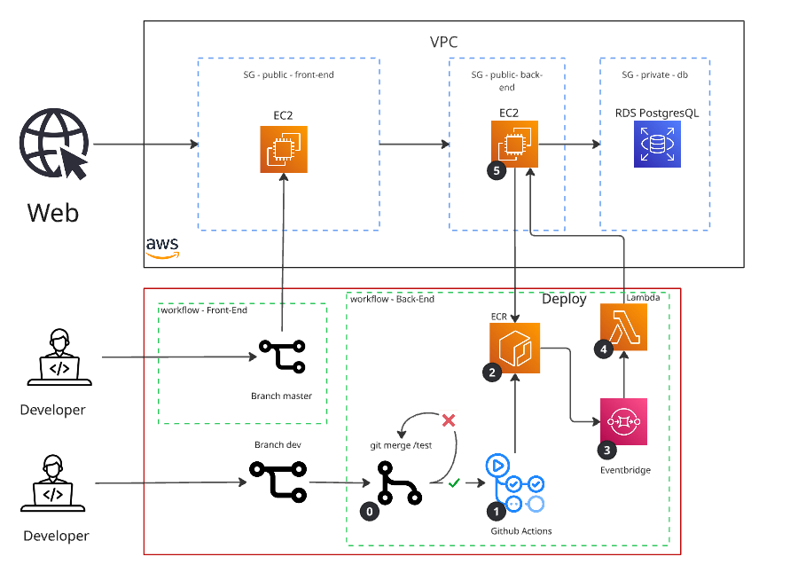

Sobre o Projeto
Sistema de cadastro e login com JWT para gerenciamento de sessão, desenvolvido em Golang.
O sistema foi implantado na AWS, utilizando uma arquitetura totalmente automatizada para gerenciar o deploy e a orquestração do ambiente.
Testar Agora
Experimente o sistema em ação. Faça login, cadastre-se ou veja todos os usuários já registrados.
Visualização do Processo
Serviços AWS Utilizados
- EC2 (x2) – Uma instância para o front-end (porta 80 pública) e outra para o back-end (apenas recebe requisições do front-end e tem porta privada para deploy).
- Lambda – Função que inicia o processo de deploy automático na EC2.
- ECR – Repositório onde as imagens Docker são armazenadas, geradas via GitHub Actions.
- EventBridge – Detecta novas imagens no ECR e aciona a função Lambda.
- RDS (PostgreSQL) – Responsável pela persistência de dados, em subnet privada da mesma VPC.
Estratégia de Branching (Git Flow Simplificado)
| Branch | Propósito | Regra de Uso |
|---|---|---|
dev | Desenvolvimento ativo e novas funcionalidades. | Única branch com commits diretos. |
test | Ambiente de testes e integração. | Recebe apenas merges da dev. |
master | Base de produção e geração da imagem Docker. | Recebe apenas merges automáticos da test. |
Pipeline de Integração Contínua (CI) – GitHub Actions
O pipeline é acionado automaticamente quando ocorre um merge de dev → test.
| Etapa | Ação | Resultado |
|---|---|---|
| 1. Testes | Executa testes de unidade e integração. | Pipeline continua. |
| 2. Merge Automático | Se todos os testes passarem, merge automático de test → master. | Código pronto para produção. |
| 3. Build e Containerização | Gera a imagem Docker. | Imagem pronta localmente. |
| 4. Teste em Container | Valida a imagem gerada. | Container validado. |
| 5. Push para ECR | Envia a imagem para o repositório AWS ECR. | Imagem disponível para deploy. |
Fluxo de Entrega Contínua (CD) na AWS
- EventBridge detecta o envio de nova imagem ao ECR.
- Lambda é invocada automaticamente.
- A função Lambda chama a rota de deploy na EC2.
- A EC2 faz pull da nova imagem, para o container anterior e executa o novo.
Resultado: deploy automatizado e validado, sem intervenção manual.
Diagrama do Fluxo Completo
[Desenvolvedor]
|
v
+----------+
| Commit | <- apenas na branch `dev`
+----------+
|
v
+-----------------------------+
| Merge: dev -> test (gatilho)|
+-----------------------------+
|
v
+--------------------------------------------------+
| [ CI/CD: GitHub Actions - Pipeline ] |
+--------------------------------------------------+
|
+--> 1. Executar Testes (Unitários/Integração)
|
+--> 2. Se sucesso: Merge automático test -> master
|
+--> 3. Build & Teste em Container (base master)
|
+--> 4. Push da Imagem Docker p/ AWS ECR
|
v
+--------------------------------------------------+
| [ AWS ECR ] |
| (Imagem armazenada e versionada) |
+--------------------------------------------------+
|
v
+--------------------------------------------------+
| [ AWS EventBridge ] |
| (Detecta evento de push no ECR) |
+--------------------------------------------------+
|
v
+--------------------------------------------------+
| [ AWS Lambda ] |
| (Invoca API de Deploy na instância EC2) |
+--------------------------------------------------+
|
v
+--------------------------------------------------+
| [ AWS EC2 - API de Deploy ] |
| - Pull da nova imagem |
| - Parada/remoção do container anterior |
| - Execução do container atualizado |
+--------------------------------------------------+
|
v
[ Aplicação Atualizada e em Execução ]
Teste em Produção
Após o desenvolvimento do sistema de login e cadastro, ele foi implantado com sucesso na nuvem. A instância EC2 do front-end comunica-se corretamente com a instância de back-end, permitindo o registro e login com persistência completa dos dados no RDS PostgreSQL.